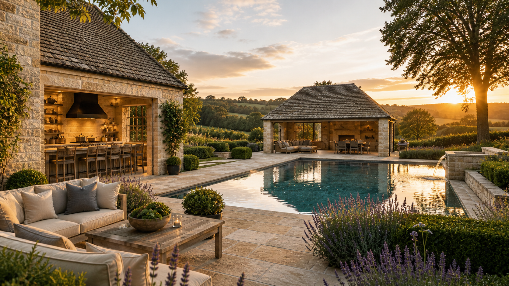

Our Services
At Aurum Landscapes, we offer a highly curated selection of bespoke landscaping services, designed exclusively for prestigious country homes and estates. Every project we undertake is crafted with artistry and precision, ensuring an outdoor space that is as luxurious as the property it complements.
Bespoke Garden Design
Our design process is tailored to bring your vision to life. Whether you desire a classical English garden or a modern outdoor retreat, our team meticulously plans every detail, from plant selection to architectural features.
Estate & Country Home Landscaping
Specializing in large-scale projects, we create landscapes that enhance the grandeur of historic estates and country properties. From sweeping lawns to intricate parterre gardens, we craft outdoor spaces that harmonize with their surroundings.
Garden Restoration & Conservation
For heritage properties, we offer expert garden restoration, ensuring that historical integrity is preserved while incorporating modern enhancements that elevate the outdoor experience.
Outdoor Living & Luxury Features
From bespoke water features and infinity pools to garden pavilions and outdoor kitchens, we seamlessly integrate opulent amenities into our landscapes.

Ongoing Garden Management
Luxury gardens require expert care. Our elite maintenance services ensure that your landscape remains immaculate throughout the seasons, handled by skilled horticulturists.
Each project begins with a private consultation, ensuring that your outdoor space reflects your lifestyle and the legacy of your estate. Contact us to discuss your vision.